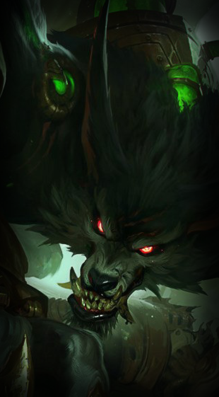

| Nombre | Q | W | E | R | Foto |
|---|---|---|---|---|---|
| Cassiopeia | Inunda una zona con veneno. Aumenta su velocidad de movimiento si alcanza a un campeón | Lanza nubes de veneno que ralentizan y dañan a los enemigos afectas. Los enemigos anclados no pueden usar habilidad de movimiento | Lanza un ataque que hace daño a los objetivos y que la cura. Si mata a un enemigo, Cassiopeia recuperará maná | Libera un remolino de energía que aturde a los enemigos que la miren y ralentiza a los que le den la espalda |  |
| Corki | Lanza una bomba e inflige daño mágico. Revela a las unidades de la zona durante un tiempo | Vuela una corta distancia lanzando bombas y dejando una estela de fuego que inflige daño | Su cañón abre fuego sobre un área cónica. Los enemigos alcanzados sufren daño y pierden armadura y resistencia mágica | Dispara un proyectil que explota al impactar infligiendo daño a los enemigos cercanos. Cada 3 proyectiles sale uno enorme que inflige daño adicional | |
| Fiddlesticks | Infunde miedo al infligir daño con habilidades sin ser visto o usando Terror, provocando que los enemigos huyan mientras dure el efecto | Drena la vida de los enemigos cercanos e inflige daño de ejecución al final del efecto | Ataca en área con su guadaña, lo que ralentiza a los enemigos alcanzados y silencia a los que golpea en el centro de la cuchilla | Una bandana de cuervos rodea a Fiddlesticks e inflige daño cada segundo a todas las unidades enemigas de la zona |  |
| Ivern | Conjura una turuta que infligen daño e inmoviliza a los objetivos. Los aliados de Ivern pueden deslizarse hacia el objetivo inmovilizado | Cuando está en la maleza, sus ataques infligen daño mágico adicional. Puede usar esta habilidad para crear una zona con maleza | Engendra un escudo para él o sus aliados que tras un lapso de tiempo, explota ralentizando y haciendo daño a los enemigos cercanos | Invoca a su amiga Margarita para que luche con él. Si esta golpea tres veces seguidas al mismo campeón, provoca un terremoto | |
| Kayn | Se desliza y luego ataca infligiendo daño | Daña y ralentiza a los objetivos en una línea | Puede atravesar obstáculos de terreno | Se oculta en el cuerpo de un enemigo e inflige un daño enorme al abandonarlo | |
| Malzahar | Abre dos portales al Vacío que disparan proyectiles que infligen daño mágico y silencian a los campeones enemigos | Invoca entes del Vacío que atacan a los enemigos cercanos | Infecta la mente de su objetivo lo que le provoca daño prolongado. Las visiones se reiniciarán si usa otra habilidad contra el campeón. Si el campeón muere con las visiones, estas pasarán al enemigo más cercano | Canaliza la esencia del Vacío para suprimir a un enemigo en una zona de energía negativa y dañina | |
| Nunu y Willump | Willump muerde a un objetivo infligiendo daño y restaurando su propia vida | Willump hace una bola de nieve que aumenta en tamaño y velocidad mientras esta rueda. La bola inflige daño a los enemigos y los lanza por los aires | Nunu lanza varias bolas de nieve que dañana a los enemigos. Una vez ha terminado, Willump inmoviliza a todos los campeones que hayan recibido el impacto de una bola de nieve | Generan un poderoso torbellino que ralentiza a los enemigos e inglige daño al final | |
| Rammus | Se lanza como una bola a gran velocidad contra sus enemigos infligiendo daño y ralentizando a los afectados por el impacto | Se sitúa en posición defensiva aumentando su armadura y su resistencia mágica. Devulve el daño a los enemigos que lo golpean con ataques básicos | Provoca a un monstruo para que se lance contra él. Obtiene velocidad de ataque | Salta y golpea una ubicación objetivo infligiendo daño mágico y ralentizando a los enemigos. Si usa Bola de poder, Rammus lanza por los aires a los enemigos |  |
| Shaco | Se hace invisible y se teleporta hasta el lugar seleccionado. Cuando es invisible su primer ataque está potenciado infligiendo daño adicional | Crea una caja invisible. Cuando se activa, la caja asusta y ataca a los enemigos cercanos | Los puñales envenenan de forma pasiva lo que reduce su velocidad de movimiento. Puede lanzarlos para infligir daño y envenenarlos. Si el enemigo tiene menos del 30% de la vida, infligen daño adicional | Crea una réplica ilusoria de sí mismo que puede atacar. Al morir, explota, lo que hace aparecer 3 minicajas sorpresa que causan daño a los enemigos cercanos | |
| Twisted Fate | Lanza 3 cartas que dañan a las unidades que atraviesen | Elige una carta mágica de su baraja y la usa para su siguiente ataque que causa efectos adicionales | Inflige daño adicional cada 4 ataques, además de aumentar su velocidad de ataque | Predice la fortuna de sus enemigos revelando a los campeones enemigos y activando el uso de Portal, que teleporta a Twisted Fate a cualquier lugar objetivo |  |
| Warwick | Arremete y muerde a su objetivo infligiendo daño en función de la vida del objetivo y cura a Warwick el equivalente al daño infligido | Huele a los enemigos que tienen menos de la mitad de vida, lo que le da velocidad de movimiento y de ataque contra ellos. Si el enemigo tiene menos del 20% de la vida dichas mejoras se triplican | Reduce el daño que recibe durante 2,5s. Al final del ataque aúlla lo que provoca que los enemigos cercanos huyan durante 1s | Salta en una dirección lo que suprime al primer campeón contra el que choque durante 1,5s | |
| Yuumi | Dispara un misil que inflige daño al primer objetivo golpeado. El misil inflige daño adicional y ralentiza si tarda menos de 1s en alcanzar al objetivo. El misil puede controlarse con el cursor | Se desliza hasta un aliado objetivo y no se la puede marcar como objetivo. De forma pasiva aumenta su fuerza adaptable y la de su aliado | Cura a Yuumi y potencia la velocidad de movimiento y la velocidad de ataque. Si está vinculada, es el aliado quien se beneficia del aumento | Canaliza siete oleadas de daño que inmovilizan a los objetivos por tres oleadas o más. Yuumi puede moverse, vincularse y luchar mientras usa la habilidad |
Cassiopeia
Corki
Fiddlesticks
Ivern
Kayn
Malzahar
Nunu y Willump
Rammus
Shaco
Twisted Fate

Warwick
Yuumi